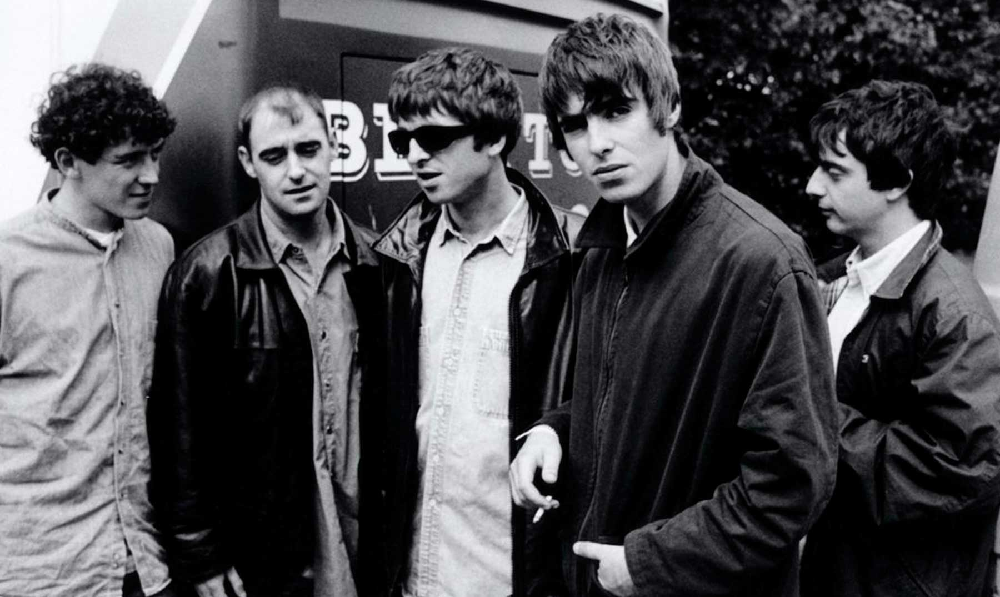

Knebworth 1996: Dos noches míticas en la historia del Britpop
Los días 10 y 11 de agosto de 1996 se realizaron dos conciertos encabezados por la banda británica Oasis en Knebworth Park.
En 1996 Oasis y otras bandas llegaban al punto máximo de la Cool Britannia y del Britpop y, después que su segundo álbum (What's the Story) Morning Glory? vendiera 500.000 copias solo la primera semana y 28 millones en el mundo, la banda decidió realizar el concierto más grande de la historia. Liam y Noel Gallagher tenían todo para hacerlo, y ambos lograron un momento inolvidable en la historia del rock.
{kind=link}
Este concierto se llevaría a cabo en Knebworth Park en el norte de Hertfordshire (Inglaterra, Reino Unido). Las entradas salieron a la venta el sábado 11 de mayo de 1996: 2.6 millones de británicos intentaron conseguir entradas, lo cual representaba el 5% de la población de Reino Unido en ese momento. Oasis pudo haber tocado por dos semanas seguidas, algo impensado para cualquier banda. Sin embargo, sólo se hicieron dos conciertos que lograron vender 250 mil entradas, logrando consagrar a este evento como uno de los más grandes de la historia hasta el momento.
El 11 de mayo de este año, Noel Gallagher anunció en sus redes sociales el lanzamiento de un largometraje con grabaciones de los conciertos para celebrar los 25 años del eventos. Este se estrenó en todo el mundo el 23 de septiembre bajo el nombre de "Oasis: Knebworth 1996". El film nos presenta el evento desde la perspectiva de los fans que cuentan sus experiencias en ambos shows, desde historias personales hasta anécdotas del viaje hasta Knebworth.